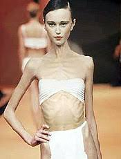

Relatório de uma pessoa gorda
1. Como ficar magro em 20 Anos
2. Minha evolução
3. Próximos Passos
. Muitas pessoas desejam ter um corpo magro. Para isso, é preciso aderir a um estilo de vida sustentável. importante,
Como ficar magro:
- Comece a fazer pesquisas. Passe a prestar atenção à sua dieta e às atividades diárias. Anote seu peso inicial e pense em uma meta.
Consulte um médico. Não faça qualquer alteração drástica antes de conversar com um profissional. Além do médico, você pode encontrar um nutricionista para ajudá-la no processo. Ele poderá fazer exames para saber se seu corpo está saudável o bastante para iniciar uma nova dieta ou um regime de exercícios.
Descubra quantas calorias você consome por dia. Para isso, visite um site, como o SparkPeople (gratuito e de fácil compreensão para iniciantes, embora esteja em inglês).
Estabeleça um objetivo tangível. Não basta apenas decidir "ficar muito magra". Em vez disso, crie uma meta como "perder 15 quilos". O médico poderá ajudá-la a determinar se esses objetivos são realistas e ideais para a sua saúde.
- Links:
clique no link para obtrer mais informações
- Evolução apos dois dias:

- Lista de Passa fome encontrados na Cápsula da probresa.
-
-
| Nome |
Genero |
Peso (kg) |
Status |
| Magresa |
Mulher |
37,23 kg |
Super magra |
| Trigão |
Cachorro |
3 kg |
Não alimentado |
| Joalheria |
Amuleto de Jade (Pequeno) |
0.3 |
Analisado |
| Jão pinto |
Macho(pinto) |
212 kg |
Obeso enorme |
| Bistecone |
Duvidosso |
12 kg |
Desnutrido | -